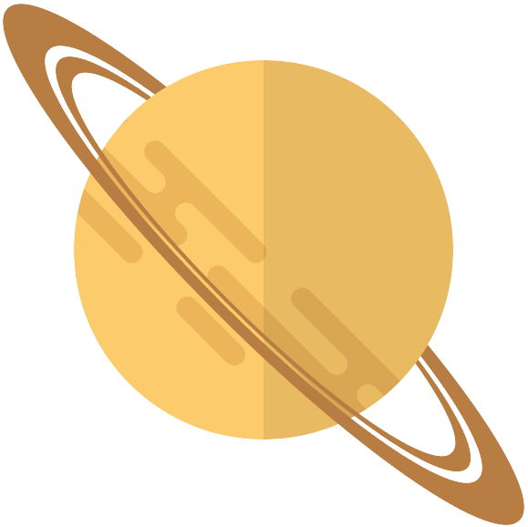
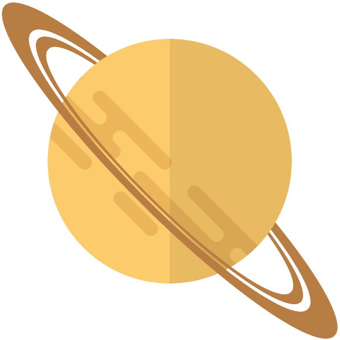

mercury
Mercury is the smallest planet in the Solar System and the closest to the Sun. Its orbit around the Sun takes 87.97 Earth days, the shortest of all the Sun's planets. Mercury is one of four terrestrial planets in the Solar System, and is a rocky body like Earth.
Source : Wikipedia
VENUS
Venus is the second planet from the Sun. It is named after the Roman goddess of love and beauty. As the brightest natural object in Earth's night sky after the Moon, Venus can cast shadows and can be, on rare occasions, visible to the naked eye in broad daylight.
Source : Wikipedia
EARTH
Third planet from the Sun and the only known planet to harbor life. About 29.2% of Earth's surface is land with remaining 70.8% is covered with water. Earth's distance from the Sun, physical properties and geological history have allowed life to evolve and thrive.
Source : Wikipedia
MARS
Mars is the fourth planet from the Sun and the second-smallest planet in the Solar System, being larger than only Mercury. In English, Mars carries the name of the Roman god of war and is often referred to as the "Red Planet".
Source : Wikipedia
jupiter
Jupiter is the fifth planet from the Sun and the largest in the Solar System. It is a gas giant with a mass two and a half times that of all the other planets in the Solar System combined, but less than one-thousandth the mass of the Sun.
Source : Wikipedia
saturn
Saturn is the sixth planet from the Sun and the second-largest in the Solar System, after Jupiter. It is a gas giant with an average radius of about nine and a half times that of Earth. It only has one-eighth the average density of Earth.
Source : Wikipedia
Uranus
Uranus is the seventh planet from the Sun. Its name is a reference to the Greek god of the sky, Uranus according to Greek mythology, was the great-grandfather of Ares. It has the third-largest planetary radius and fourth-largest planetary mass in the Solar System.
Source : Wikipedia
Neptune
Neptune is the eighth and farthest-known Solar planet from the Sun. In the Solar System, it is the fourth-largest planet by diameter, the third-most-massive planet, and the densest giant planet. It is 17 times the mass of Earth, more massive than its near-twin Uranus.
Source : Wikipedia
ROTATION TIME 58.6 days
REVOLUTION TIME 87.97 days
radius 2,439.7 km
AVERAGE TEMP 430°c
ROTATION TIME 243 days
REVOLUTION TIME 224.7 days
radius 6,051.8 km
AVERAGE TEMP 471°c
ROTATION TIME 0.99 days
REVOLUTION TIME 365.26 days
radius 6,371 km
AVERAGE TEMP 16°c
ROTATION TIME 1.03 days
REVOLUTION TIME 1.88 years
radius 3,389.5 km
AVERAGE TEMP −28°c
ROTATION TIME 9.93 hours
REVOLUTION TIME 11.86 years
radius 69,911 km
AVERAGE TEMP -108°c
ROTATION TIME 10.8 hours
REVOLUTION TIME 29.46 years
radius 58,232 km
AVERAGE TEMP -138°c
ROTATION TIME 17.2 hours
REVOLUTION TIME 84 years
radius 25,362 km
AVERAGE TEMP -195°c
ROTATION TIME 16.08 hours
REVOLUTION TIME 164.79 years
radius 24,622 km
AVERAGE TEMP -201°c